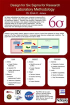
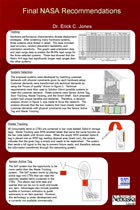

RAID

Facilities
CELDI - Projects
|  | Desgin for Six SigmaSix Sigma methodology has helped many companies increase profits in many ways. However, some principles of Six Sigma are not well suited for applications research. Therefore, the University of Nebraska's RFSCL Laboratory has developed a new research methodology based on the acclaimed Design for Six Sigma (DFSS) methodology. This new methodology emphasizes the cycling of trials and analysis typically found when new technologies are being created. Click here to download the bigger poster. |
NASA Gen2 TestingThe next generation of RFID technology is beginning to enter the market. These new tags are promoted as being more reliable and having a longer read range then older generation tags. Named "Gen 2," these tags are actually cheaper then the older "Gen 1" tags. Click here to download the bigger poster. |
|
|  | Final NASA RecommendationHardware performance characteristics dictate deployment strategies. After screening many hardware systems, three systems were tested in detail. The tests included read accuracy, random placement readability, and orientation sensitivity. This graph used orientation data and read range data to predict the 99.9% read range for the three selected systems. These test showed that the Matrix 4x4 tags had significantly longer read ranges then the other systems. Click here to download the bigger poster. |
RFID and Supply ChainIn December 2005 the International Space Station (ISS) discovered in a routine audit that it had a food shortage. This shortage nearly caused the evacuation of the space station and millions of government research dollars wasted. This prompted NASA to evaluate it's inventory management systems onboard the ISS. The need to develop an inventory management system that could track consumable items was clear. This lead to a research application project between NASA, Barrios, and the University of Nebraska-Lincoln. Click here to download the bigger poster. |
|
Inventory Reduction through VMIThe City of Houston Health and Human Services (COHHHS) managed and maintained 4 warehouses and over 20 Distribution Centers (DC). These DC's ordered supplies through the warehouses and the orders were distributed from the warehouse. Click here to download the bigger poster. |